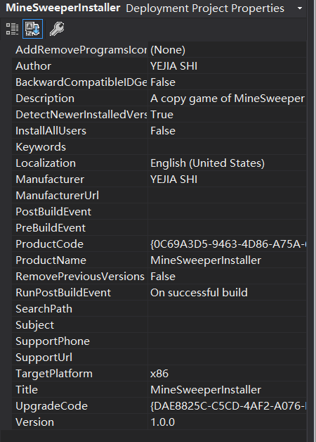

Generate a SetUp.exe file in Winform application
Create a Setup Project for your application
When you are sure that have finished your development for your application (Winform application in my case). You can right click your Solution in Solution Explorer, then click Add new project. In the windows came out, search Installer. then choose Setup Project And create it.
Create Primary output
After you create your Installer project, you will find three folders in the left of screen:
- The folder Application Folder stocks all your project files and resources(documents, images).
- The folder User's Desktop can create shortcut in desktop
- The folder User's Programs Menu can create shortcut in Program menu.
Now right click the folder Application Folder and choose Add project output. In the windows came out, choose your primary project in dropdown list Project. And click OK.
In my case, I have some image resource, so I also created a sub folder named Img to stock my images.
After you have added your primary output, you can now set some properties for your SetUp application. Right click your Installer project, and select property. In this property windows, you can set your application’s author, your application’s description, and some other properties.

Create Desktop & Program Menu shortcut
In the other two folder, you can set up your shortcuts in desktop or program menu. Right click the folder and choose Create shortcut to user's desktop. Then you can name your shortcut and you can also set a icon for your shortcut. (Note: for the shortcut’s icon, only the format .ico is accepted).
Add Prerequistes to your installer project
In some cases, your application need some other dependencies to run it like .Net Framework, then you should include these components when installing it. Right click your installer’s project, select Property => Prerequisites. In this windows, you can select which prerequisites to install.